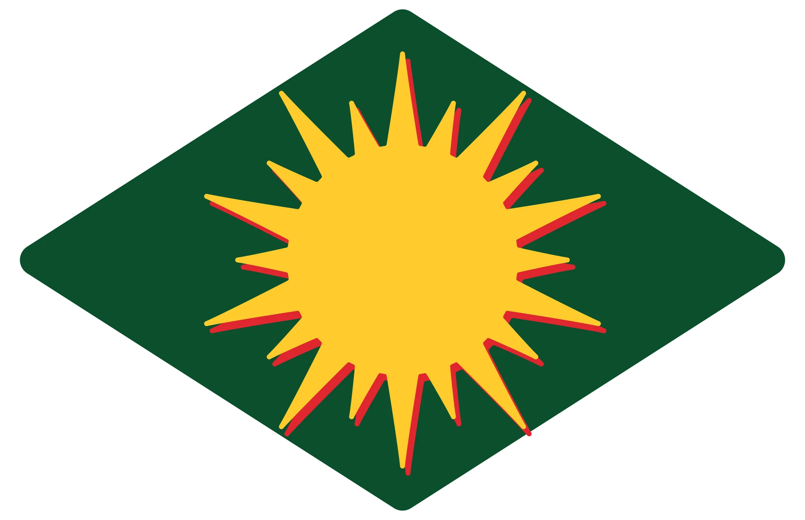

Artigos
Em breve
Ideias com base, propostas prontas para o país.
Os artigos da BRASA vão reunir pesquisas, debates e propostas da rede. Enquanto eles não chegam, conheça a visão que move a BRASA.

Artigos
Ideias com base, propostas prontas para o país.
Os artigos da BRASA vão reunir pesquisas, debates e propostas da rede. Enquanto eles não chegam, conheça a visão que move a BRASA.